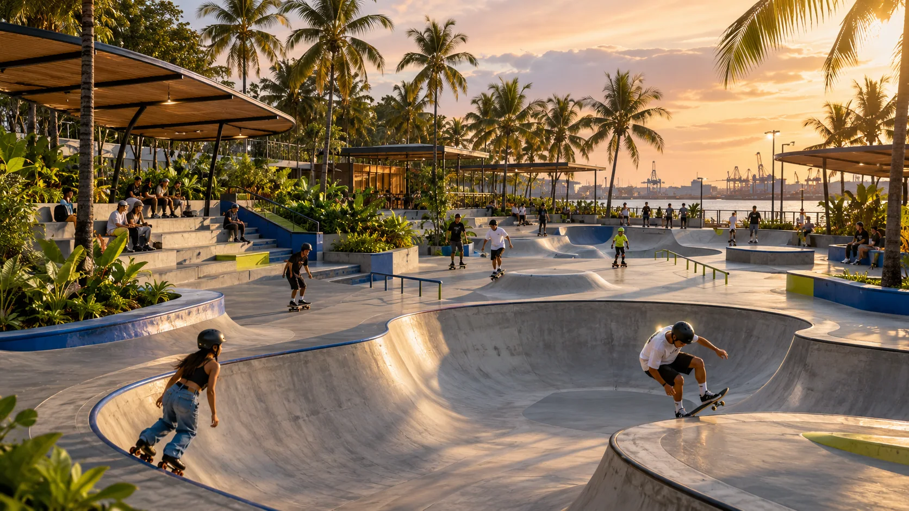
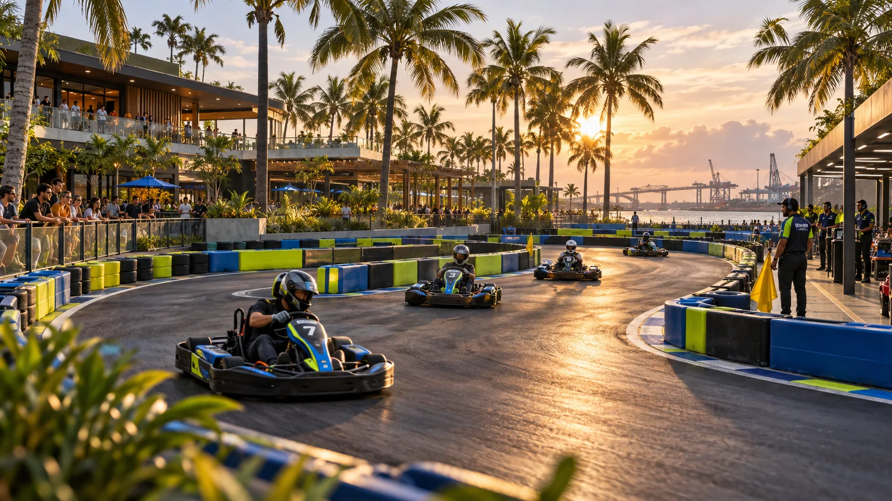
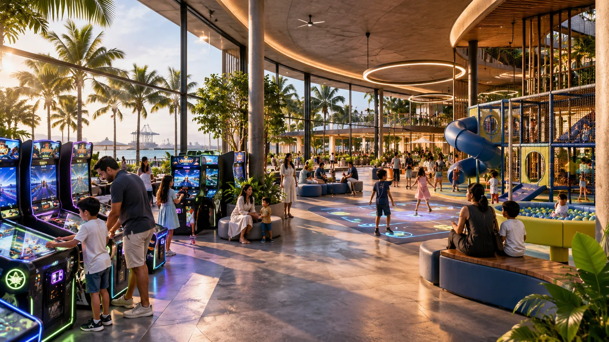
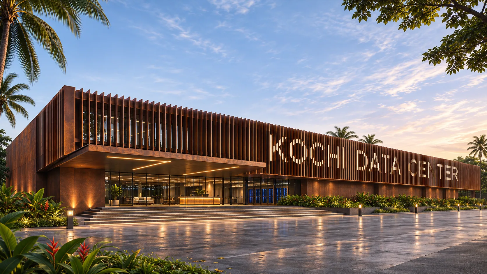

Willingdon Island, Kochi
 Tech Island
Tech Island
A proposed campus for technology, work and play.
Phase I · Proposed development
AI IT Parks & Play Area
Phase I brings enterprise workspace, coworking and leisure together in a public-facing district on Willingdon Island.
Workspaces for technology teams
The plan includes flexible coworking, team suites and enterprise workplaces.
Play and recreation
The proposed play area brings together go-karting, skating, paintball and indoor recreation.
Phase II · Proposed development
Kochi Data Centre
A planned 10 MW data centre on a dedicated parcel within Tech Island. The concept separates secure infrastructure from Phase I’s public areas.
Capacity and scope are subject to planning and technical validation.
